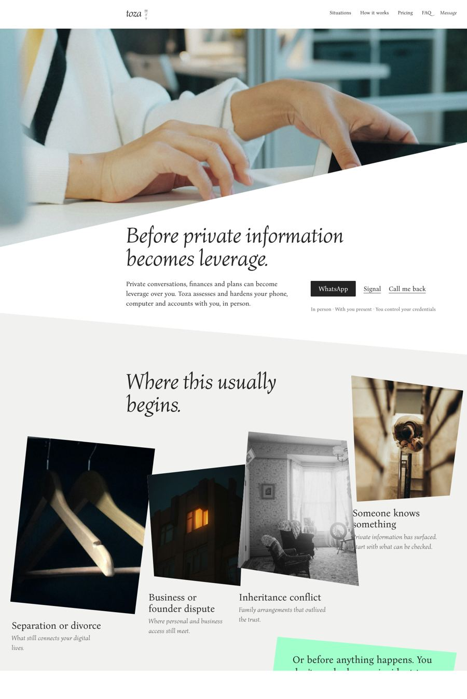
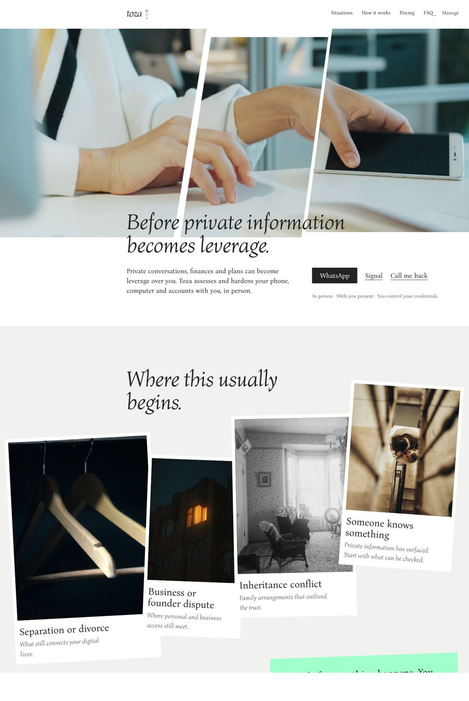
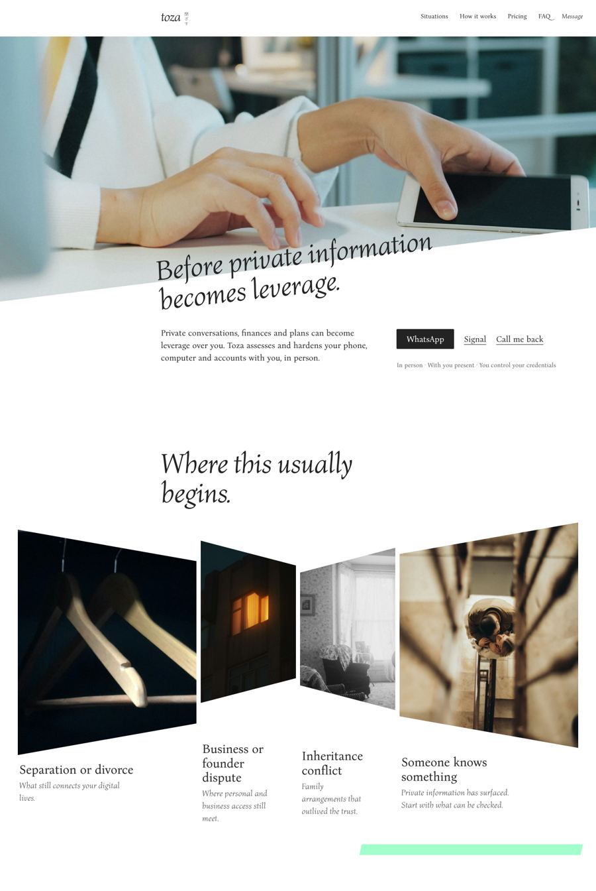
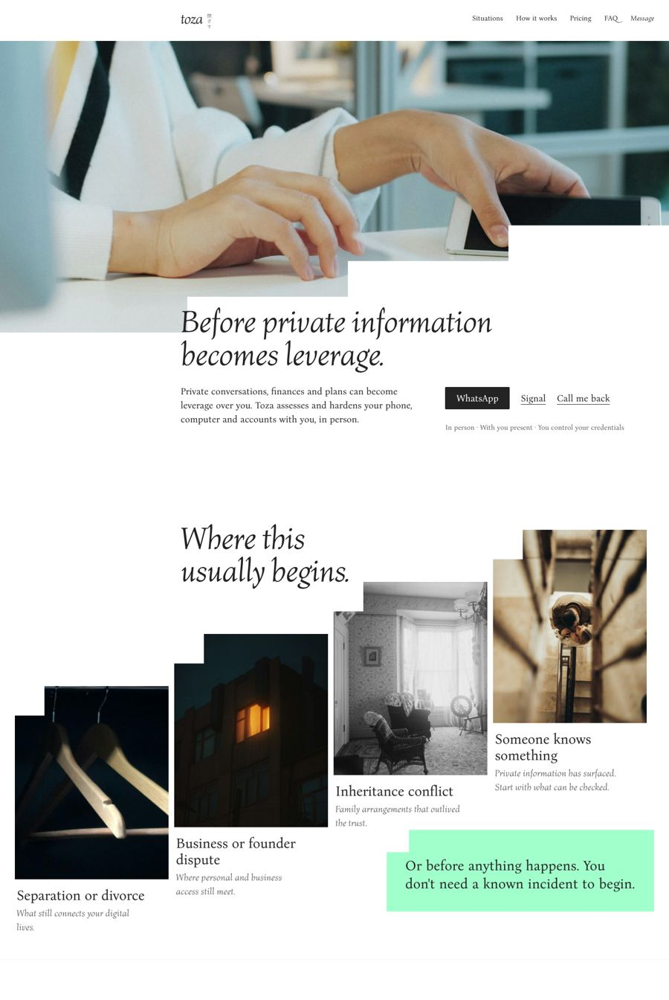
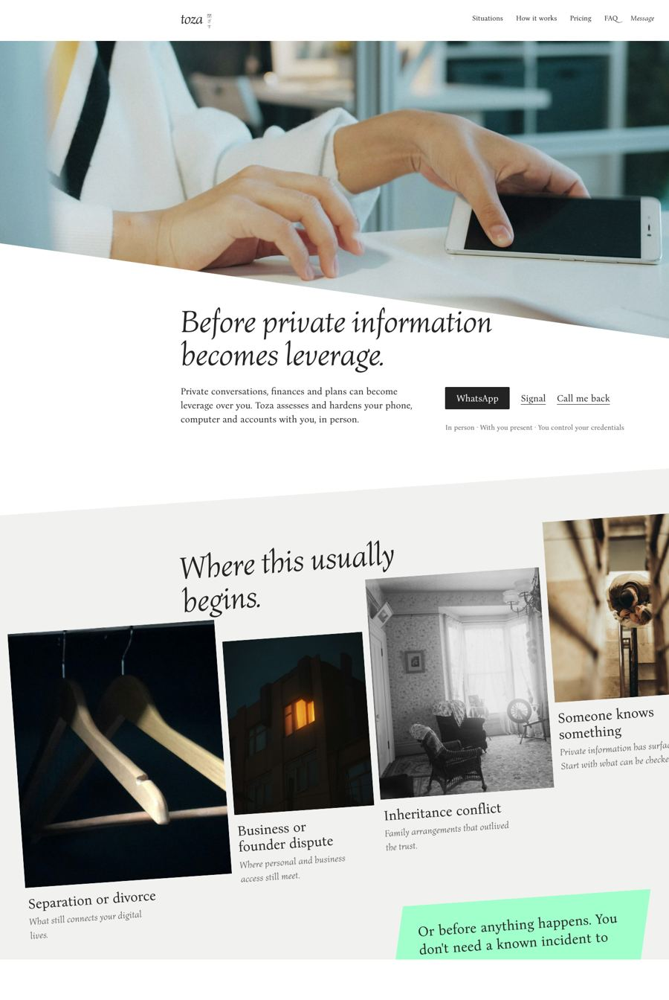
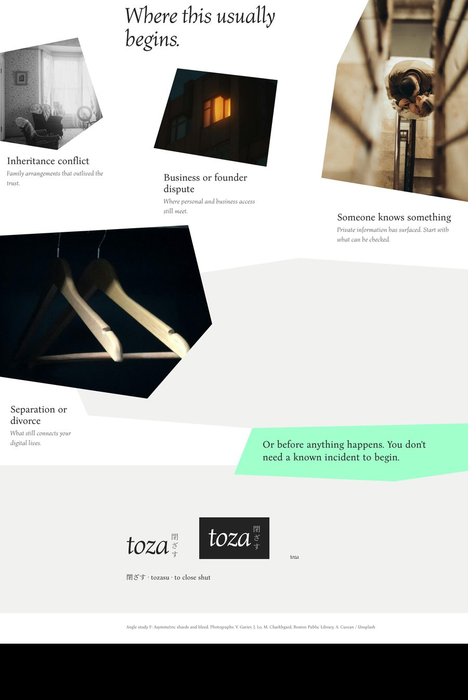
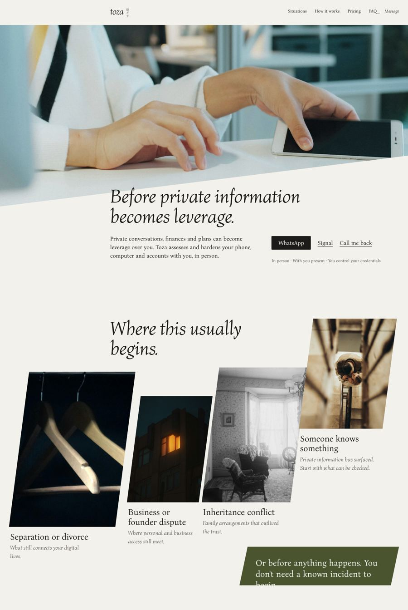
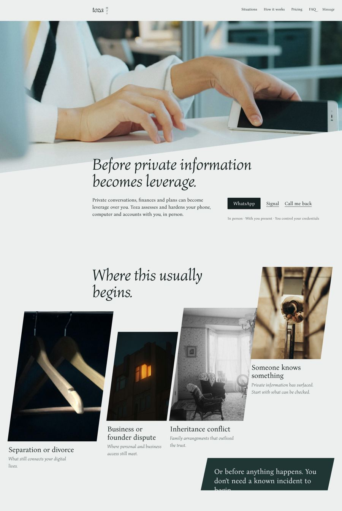
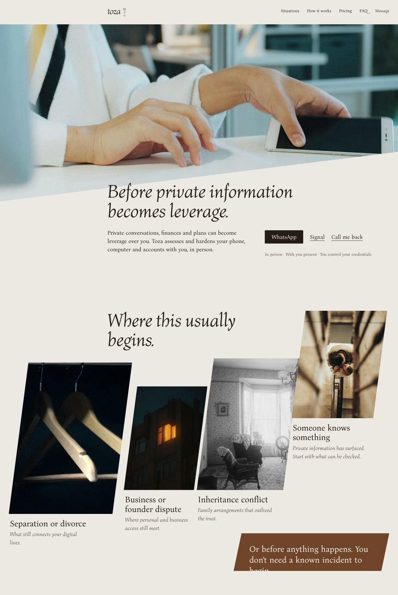
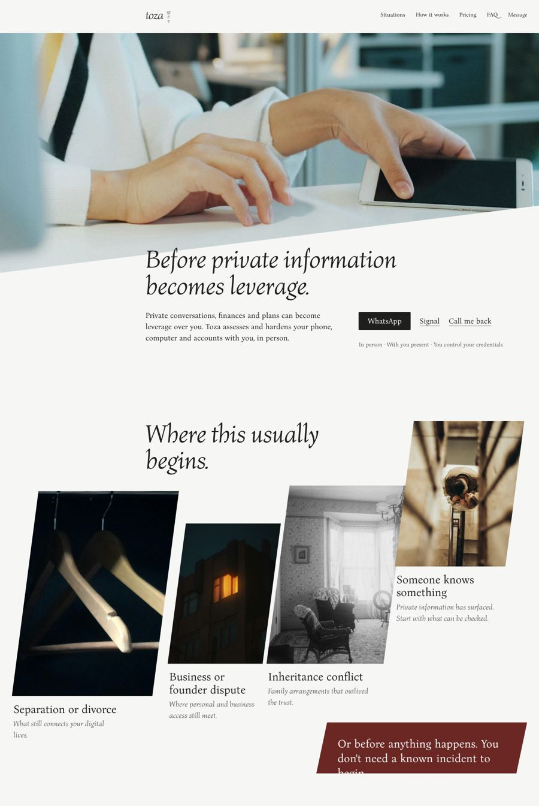

A · Crossing diagonals
Angles vary and oppose: a steep hero cut, an opposite cut into the situations, every tile leaning its own way.
Concept board for Dr. Lior Tabansky. Copy unchanged from the approved site (2toza main @ b3efb35). Approved so far: the direction, the wordmark, full-bleed hero, the four situation photos, one diagonal angle.
Open board 2 (greys and mint).
Photographs, Unsplash License: V. Gariev (hero); J. Lo, M. Charkhgard, Boston Public Library, A. Curcan (situations). Full list in assets/photos/CREDITS.md.
Six ways to make the geometry dynamic instead of one parallel angle. A–E were judged still symmetrical; F answers that. Same copy, photos and palette (greys and mint).

Angles vary and oppose: a steep hero cut, an opposite cut into the situations, every tile leaning its own way.

The hero breaks into three shards, a door ajar; the situations overlap like prints at different small rotations.

From the stairwell: tiles cut toward one vanishing point, a corridor; the headline runs along the hero cut.

The cut becomes steps: the hero edge descends in stairs; the situations climb across the page, each notched like a step.

The situations sit on one plane tilted against the page; the hero cut runs the other way.

No two edges parallel, every shape different, all cuts leaning one way like a gust. Photos run off both edges; the mint note crosses into the next section. Text stays level.
Same board, five radically different colour systems: each colours the whole field and switches the situations to a second field. Every text pair passes WCAG AA. Click to open the board in it.

A deep green field with cream type; the situations on cream; ochre as the one accent. Old-world private bank, discreet.

Saturated ultramarine with white; the situations on stone in ultramarine ink. Confident, contemporary, unmistakable.

A saffron field with near-black type; the situations turn black with saffron type. The boldest; light that warns.
Deep oxblood with pale stone type; the situations on stone. Leather, wine, a closed room.

Pale sky with navy type; the situations turn navy at night. Calm by day, closed at night.